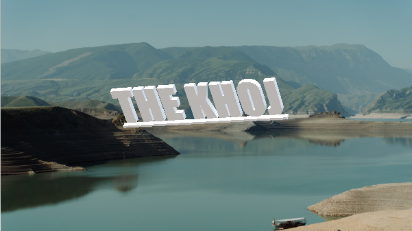

Khoj is not just a team; its a passionate group of music enthusiasts dedicated to unravelling the diverse world of music genres. With khoj, embark on an auditory adventure where you will explore the rythmic tapestry of musical history, from timeless classics to cutting edge sounds. Join us in discovering the magic that music brings to our lives.
|
CARNATIC |
HINDUSTANI |
CLASSICAL |
BOLLYWOOD |
INDIE POP |
|---|---|---|---|---|
|
BENGALI FOLK |
SUFI |
LAVANI |
PUNJABI |
ROMANTIC |
The Team Khoj aspires to look for music and its generes and help you explore the taste of music which you carry forward.
We are in search of music and so the word Khoj Defines our capitibility to deal with your needs.
Team Members:
1.Jot Ajmani
2.Sujal Sharma